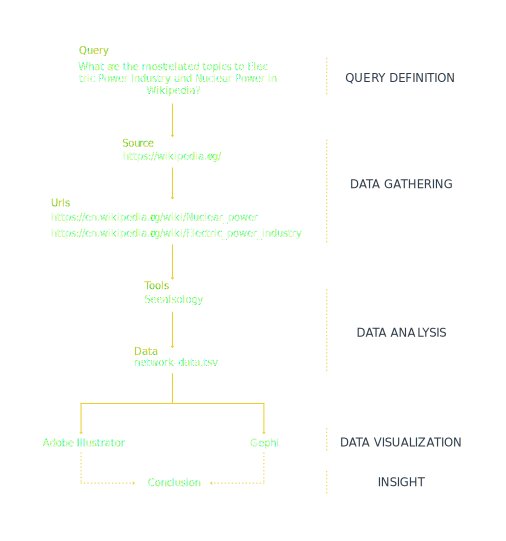

Description
在讨论深层次的问题之前，我想先挖掘”电力工业(Electric Power Industry)“和“核电(Nuclear Power)”之间的关系。核电与电力工业的关系错综复杂，二者相辅相成，我选择维基百科(Wikipedia)作为探究二者关系的媒介，并从中挖掘出来与二者皆有关的关键词，用以讨论更深层次的问题。
在此可视化中，您可以看到“电力工业”与“核电”的关联。其中根节点为“电力工业”和“核电”，其他簇和节点表示与这两个深度级别的种子相关的页面，为了保证关联性，我将最大深度设定为 2。我采用了 Fruchterman Reingold 的可视化方式，并利用不同饱和度的颜色呈现层次关系、不同色相的颜色代表不同的簇群。
Protocol

conclusion
通过可视化您可以看到，在由 “Electric Power Industry” 和 “Nuclear Power” 构成的社区网络中，与 “Electric Power Industry” 有关的关键词有 89 个，与“Nuclear Power”有关的关键词有 167 个，两者重合 2 个，共计 254 个。其中，二者通过 ”Distributed Generation”、“Electricity Generation”、“Feed-in Tariff”、“Emissions & Generation Resource Integrated Database” 以及 “World Energy Consumption” 交集在一起。在以上关键词中，我将选择其中的一部分用于接下来的社区舆论研究(Question 4)。